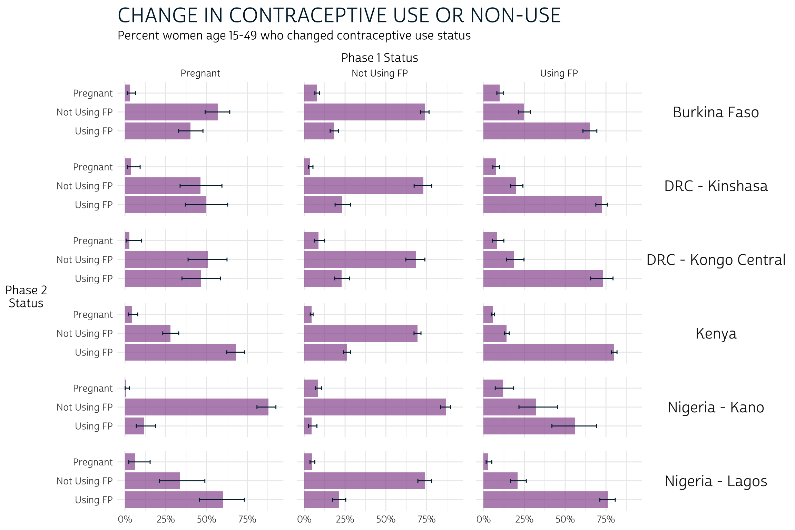
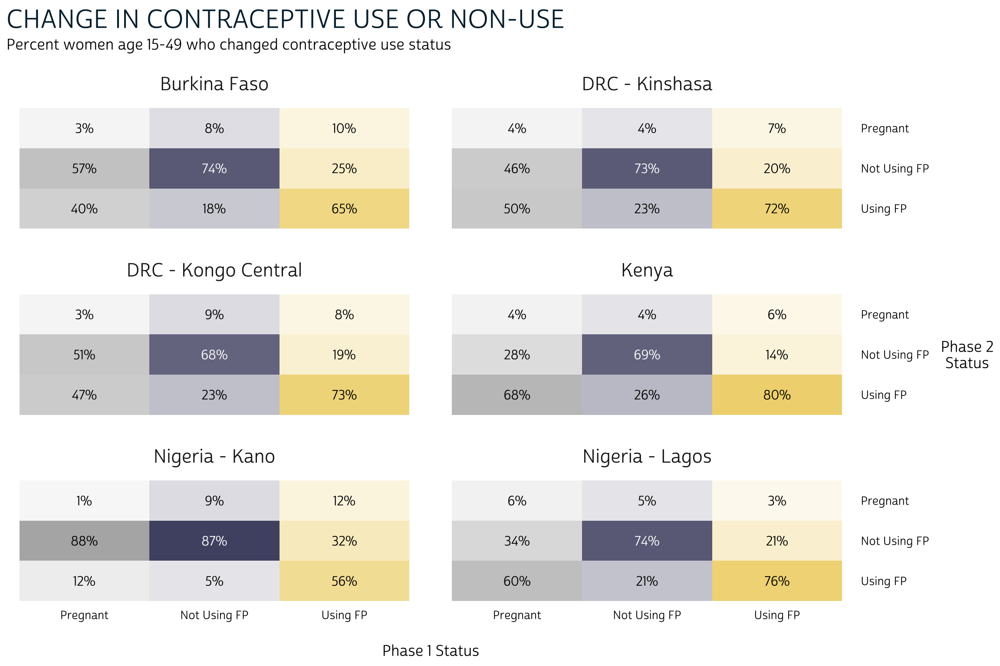
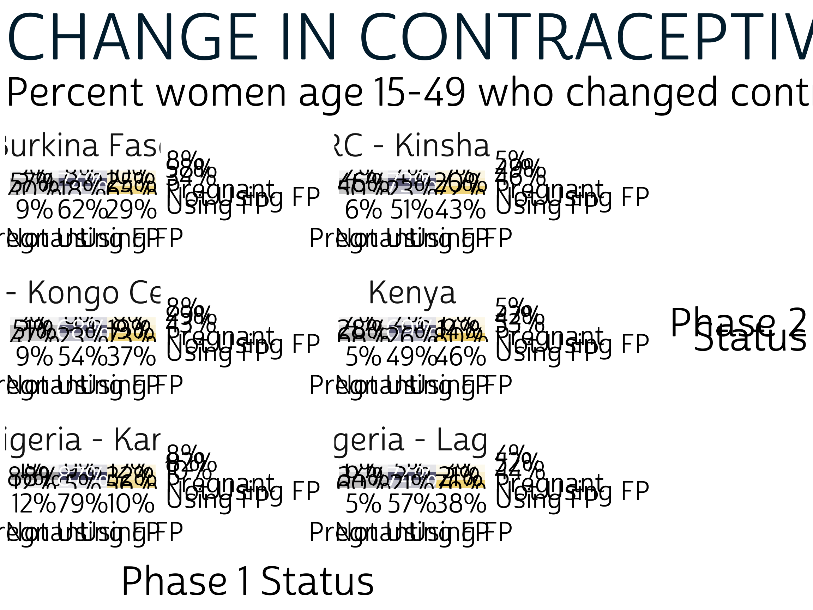
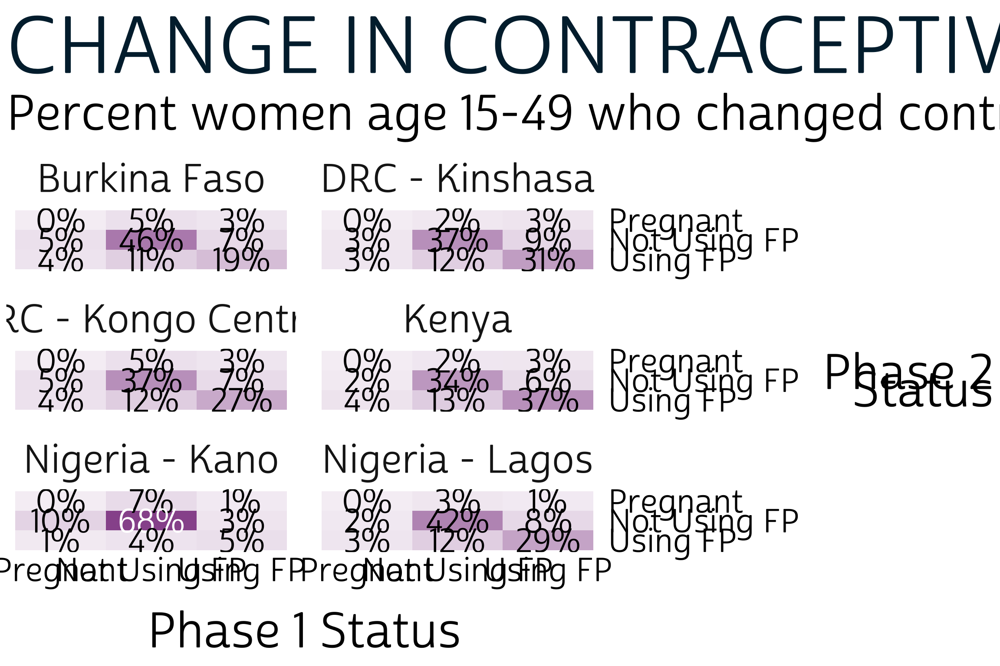

1 Advanced Data Visualization
In Chapter 4, we demonstrated how to calculate key family planning indicators for PMA panel surveys. We also created simple bar charts to help readers compare confidence intervals for each population estimate.
Chapter 5 digs into some of the other data visualization tools that are commonly used for two-phase panel data: this will include color-coded crosstabs - or heatmaps - and alluvial plots resembling those shown in the PMA Longitudinal Brief for each survey.
R users can build heatmaps with the same ggplot2 package featured in Chapter 4, but alluvial plots are a bit more challenging. To make things easier, we’ll build ours with ggalluvial, an extension package for ggplot2 that includes tools designed specifically for alluvial plots.© Cory Brunson et al. (GPL-3)
1.1 Chapter Setup
In addition to ggalluvial, we’ll also load three packages featured throughout this manual: tidyverse, ipumsr, and srvyr.
library(tidyverse)
library(ipumsr)
library(srvyr)
library(ggalluvial)This chapter features the same data extract showcased in Chapter 4, which includes all six of the available samples. It is organized in wide format with only Female Respondents selected. This chapter focuses on the following variables included in that extract:
- RESULTFQ - Result of female questionnaire
- PANELWEIGHT - Phase 2 female panel weight
- RESIDENT - Household residence / membership
- PREGNANT - Pregnancy status
- GEOCD - Province, DRC
- GEONG - State, Nigeria
- CP - Contraceptive user
- COUNTRY - PMA country (preselected)
- EAID - Enumeration area (preselected)
Recall that our analysis in Chapter 4 concerned only de facto panel members who completed all or part of the Female Questionnaire in both Phase 1 and Phase 2. We also excluded women who are marked “NIU (not in universe)” for a key question concerning current contraceptive use (CP). As a reminder, you can load the extract into R and select relevant cases like so:
# import the data extract and metadata files
dat <- read_ipums_micro(
ddi = "data/pma_00106.xml",
data = "data/pma_00106.dat.gz"
)
# inclusion criteria for analysis
dat <- dat %>%
filter(
RESULTFQ_2 == 1, # must have completed Phase 1 FQ
RESIDENT_1 %in% c(11, 22) & # must be de facto population (both phases)
RESIDENT_2 %in% c(11, 22),
CP_1 < 90 & CP_2 < 90 # must answer "current FP use" question (both phases)
) Additionally, we will reference four variables created in Chapter 4:
POP- Population of interestSTRATA_RECODE- Sample strata (adjusted to include DRC samples)FPSTATUS_1- Pregnant, using contraception, or using no contraception at Phase 1FPSTATUS_2- Pregnant, using contraception, or using no contraception at Phase 2
These variables were created like so:
# custom variables: `POP` and `FPSTATUS`
dat <- dat %>%
mutate(
# Population of interest (country + region, where applicable)
POP = case_when(
!is.na(GEOCD) ~ paste("DRC -", as_factor(GEOCD)),
!is.na(GEONG) ~ paste("Nigeria -", as_factor(GEONG)),
TRUE ~ as_factor(COUNTRY) %>% as.character()
),
# strata: includes placeholder values for DRC regions
STRATA_RECODE = if_else(
is.na(GEOCD),
as.numeric(STRATA_1),
as.numeric(GEOCD)
),
# Family planning use-status at Phase 1
FPSTATUS_1 = case_when(
PREGNANT_1 == 1 ~ "Pregnant",
CP_1 == 1 ~ "Using FP",
CP_1 == 0 ~ "Not Using FP"
),
# Family planning use-status at Phase 2
FPSTATUS_2 = case_when(
PREGNANT_2 == 1 ~ "Pregnant",
CP_2 == 1 ~ "Using FP",
CP_2 == 0 ~ "Not Using FP"
),
# Create factors to control order of display in graphics output
across(
c(FPSTATUS_1, FPSTATUS_2),
~.x %>% fct_relevel("Pregnant", "Not Using FP", "Using FP")
)
)1.2 Grouped Bar Charts
Now let’s revisit the grouped bar chart we made to compare FPSTATUS_1 and FPSTATUS_2 for each population POP in Chapter 4. We made this chart in basically two steps.
First, we used srvyr to build a summary table that incorporates survey weights from PANELWEIGHT and generates a 95% confidence interval for each estimate. We used EAID_1 to generate the cluster-robust standard errors underlying each confidence interval, and we stratified standard error estimation by STRATA_RECODE.
Notice that we group_by FPSTATUS_1 and FPSTATUS_2 here. When we do this, survey_mean estimates the proportion of outcomes represented by the variable that appears last, which is FPSTATUS_2. The proportions sum to 1.0 for each combination of POP and FPSTATUS_1: in other words, we obtain the proportion of FPSTATUS_2 on the condition that women from a given POP held a particular status represented by FPSTATUS_1. For this reason, this is known as a conditional distribution.
status_tbl <- dat %>%
group_by(POP) %>%
summarise(
.groups = "keep",
cur_data() %>%
as_survey_design(weight = PANELWEIGHT, id = EAID_1, strata = STRATA_RECODE) %>%
group_by(FPSTATUS_1, FPSTATUS_2) %>%
summarise(survey_mean(prop = TRUE, prop_method = "logit", vartype = "ci"))
)
status_tbl# A tibble: 54 × 6
# Groups: POP [6]
POP FPSTATUS_1 FPSTATUS_2 coef `_low` `_upp`
<chr> <fct> <fct> <dbl> <dbl> <dbl>
1 Burkina Faso Pregnant Pregnant 0.0302 0.0137 0.0652
2 Burkina Faso Pregnant Not Using FP 0.568 0.491 0.642
3 Burkina Faso Pregnant Using FP 0.401 0.329 0.478
4 Burkina Faso Not Using FP Pregnant 0.0779 0.0651 0.0929
5 Burkina Faso Not Using FP Not Using FP 0.739 0.711 0.765
6 Burkina Faso Not Using FP Using FP 0.183 0.158 0.211
7 Burkina Faso Using FP Pregnant 0.0993 0.0815 0.121
8 Burkina Faso Using FP Not Using FP 0.248 0.213 0.287
9 Burkina Faso Using FP Using FP 0.653 0.609 0.694
10 DRC - Kinshasa Pregnant Pregnant 0.0367 0.0140 0.0930
# … with 44 more rowsThe grouped bar chart made in Chapter 4 plots the estimated values in coef together with the confidence interval represented by _low and _upp. This chart is useful because it packs a lot of information into a single, reader-friendly graphic. However, we also mentioned at the end of Chapter 4 that it has some considerable drawbacks. Most importantly, we weren’t able to include information from the marginal distribution in each phase.

A marginal distribution for FPSTATUS_1 would indicate the likelihood that a woman began the survey period pregnant, using family planning, or not using family planning. Likewise the marginal distribution for FPSTATUS_2 estimates the likelihood that a woman would hold any such status at Phase 2, independently of her status at Phase 1. We call these distributions “marginal” because they’re usually included in the row or column margins of a crosstab.
1.3 Heatmaps
Let’s return to status_tbl, but this time we’ll plot it as a crosstab with color and alpha (transparency) aesthetics. This type of crosstab is usually called a heatmap. First, we’ll wrap a few cosmetic layout options into a custom function we’ll call pma_heatmap. Feel free to create your own theme, but we include the code used to produce ours below (you’ll need the showtext package to load a custom font like “cabrito”, or you can omit that part to use the R default font).
pma_heatmap <- function(
title = NULL, # an optional title
subtitle = NULL, # an optional subtitle
xaxis = NULL, # an optional label for the x-axis (displayed below)
yaxis = NULL # an optional label for the y-axis (displayed right)
){
components <- list(
theme_minimal() %+replace% theme(
text = element_text(family = "cabrito", size = 13),
axis.text = element_text(size = 10),
strip.text.x = element_text(size = 16, margin = margin(t = 10, b = 10)),
strip.text.y = element_text(size = 16, angle = 0),
strip.background = element_blank(),
axis.title.y = element_text(angle = 0, margin = margin(r = 10)),
axis.title.y.right = element_text(angle = 0, margin = margin(l = 10)),
axis.title.x.bottom = element_text(margin = margin(t = 20)),
plot.title = element_text(size = 22, color = "#00263A",
hjust = 0, margin = margin(b = 5)),
plot.subtitle = element_text(hjust = 0, margin = margin(b = 10)),
panel.grid = element_blank(),
panel.spacing = unit(1, "lines"),
legend.position = "none"
),
labs(title = title, subtitle = subtitle, x = xaxis, y = str_wrap(yaxis, 10)),
scale_fill_manual(values = c(
"Pregnant" = "#B4B3B3", "Not Using FP" = "#4E4F71", "Using FP" = "#EFD372"
)),
scale_color_manual(values = c("black", "white")),
scale_y_discrete(position = "right", limits = rev)
)
}The plot is built with rectangles from geom_tile and text labels from geom_text. Then, we tell geom_tile to use one fill color for each type of response in FPSTATUS_1: this makes it easy for the reader to see that the totals in each tile sum to 100% in columns (not rows). The alpha aesthetic uses the value in coef to control the transparency of each color (by default, our minimum value 0 would be 100% transparent).
status_tbl %>%
ggplot(aes(x = FPSTATUS_1, y = FPSTATUS_2)) +
geom_tile(aes(fill = FPSTATUS_1, alpha = coef)) +
geom_text(aes(
label = scales::percent(coef, 1),
color = coef > 0.5 & FPSTATUS_1 == "Not Using FP" # white vs black text
)) +
facet_wrap(~POP, nrow = 3, scales = "fixed") +
pma_heatmap(
"CHANGE IN CONTRACEPTIVE USE OR NON-USE",
"Percent women age 15-49 who changed contraceptive use status",
xaxis = "Phase 1 Status",
yaxis = "Phase 2 Status"
) 
The nice thing about this heatmap layout is that - compared with our bar chart - it’s much easier to include data from the marginal distribution of FPSTATUS_1 and FPSTATUS_2. To do so, we’ll first need to add them to status_tbl.
First, we use group_by(FPSTATUS_1) to make the column margins and join them to status_tbl. (Note that we set vartype = NULL because we won’t be able to include confidence intervals on our heatmap.)
status_tbl <- dat %>%
group_by(POP) %>%
summarise(
cur_data() %>%
as_survey_design(weight = PANELWEIGHT, id = EAID_1, strata = STRATA_RECODE) %>%
group_by(FPSTATUS_1) %>%
summarise(cols = survey_mean(prop = TRUE, prop_method = "logit", vartype = NULL))
) %>%
full_join(status_tbl, ., by = c("POP", "FPSTATUS_1"))Next, we use group_by(FPSTATUS_2) to add row margins to status_tbl.
status_tbl <- dat %>%
group_by(POP) %>%
summarise(
cur_data() %>%
as_survey_design(weight = PANELWEIGHT, id = EAID_1, strata = STRATA_RECODE) %>%
group_by(FPSTATUS_2) %>%
summarise(rows = survey_mean(prop = TRUE, prop_method = "logit", vartype = NULL))
) %>%
full_join(status_tbl, ., by = c("POP", "FPSTATUS_2"))The column margins now appear in cols, while the row margins appear in rows.
status_tbl# A tibble: 54 × 8
# Groups: POP [6]
POP FPSTATUS_1 FPSTATUS_2 coef `_low` `_upp` cols rows
<chr> <fct> <fct> <dbl> <dbl> <dbl> <dbl> <dbl>
1 Burkina Faso Pregnant Pregnant 0.0302 0.0137 0.0652 0.0879 0.0799
2 Burkina Faso Pregnant Not Using FP 0.568 0.491 0.642 0.0879 0.583
3 Burkina Faso Pregnant Using FP 0.401 0.329 0.478 0.0879 0.337
4 Burkina Faso Not Using FP Pregnant 0.0779 0.0651 0.0929 0.624 0.0799
5 Burkina Faso Not Using FP Not Using FP 0.739 0.711 0.765 0.624 0.583
6 Burkina Faso Not Using FP Using FP 0.183 0.158 0.211 0.624 0.337
7 Burkina Faso Using FP Pregnant 0.0993 0.0815 0.121 0.288 0.0799
8 Burkina Faso Using FP Not Using FP 0.248 0.213 0.287 0.288 0.583
9 Burkina Faso Using FP Using FP 0.653 0.609 0.694 0.288 0.337
10 DRC - Kinshasa Pregnant Pregnant 0.0367 0.0140 0.0930 0.0552 0.0533
# … with 44 more rowsNow, we can simply paste these values together with the original labels from FPSTATUS_1 and FPSTATUS_2.
status_tbl %>%
ggplot(aes(
x = paste0(scales::percent(cols, 1), "\n", FPSTATUS_1) %>% as_factor,
y = paste0(scales::percent(rows, 1), "\n", FPSTATUS_2) %>% as_factor
)) +
geom_tile(aes(fill = FPSTATUS_1, alpha = coef)) +
geom_text(aes(
label = scales::percent(coef, 1),
color = coef > 0.5 & FPSTATUS_1 == "Not Using FP"
)) +
facet_wrap(~POP, nrow = 3, scales = "free") +
pma_heatmap(
"CHANGE IN CONTRACEPTIVE USE OR NON-USE",
"Percent women age 15-49 who changed contraceptive use status",
xaxis = "Phase 1 Status",
yaxis = "Phase 2 Status"
)
The information contained in our heatmap is similar to what we saw in our bar chart, except for two things:
- There are no error bars on our heatmap. If we wanted to include information about the confidence interval for each estimation, we would have to include text symbols.
- While both plots show information about the conditional distribution of
FPSTATUS_2given a starting point inFPSTATUS_1, only the heatmap includes the marginal distribution of each variable in its row and column margins.
The marginal distribution may provide crucial information about the conditional distribution that we would otherwise miss. Consider Burkina Faso, where both users and non-users of family planning at Phase 1 were generally most likely to maintain their status at Phase 2. The marginal distribution adds additional information: non-users comprise a larger share of the overall population at Phase 1.
In certain contexts, you may want to combine information from the Phase 1 marginal distribution together with the conditional distribution of outcomes at Phase 2. To continue with our example from Burkina Faso, you might report that - because non-users represent about 62% of the population, only about 11% of the population adopted family planning at Phase 2 following non-use at Phase 1. That is: 18% of 62% is 11%.
In contrast with the conditional distribution, this type of distribution describes the share of the population that experiences some combination of Phase 1 and Phase 2 outcomes without assuming a particular starting point at Phase 1. It’s known as a joint distribution because it gives the probability that two events will happen together (in sequence). Let’s return to our summary table, status_tbl: to find the estimated joint distribution for each combination of FPSTATUS_1 and FPSTATUS_2, you could simply multiply each value in cols by the value in coef:
status_tbl %>% mutate(joint = cols * coef)# A tibble: 54 × 9
# Groups: POP [6]
POP FPSTATUS_1 FPSTATUS_2 coef `_low` `_upp` cols rows joint
<chr> <fct> <fct> <dbl> <dbl> <dbl> <dbl> <dbl> <dbl>
1 Burkina Faso Pregnant Pregnant 0.0302 0.0137 0.0652 0.0879 0.0799 0.00266
2 Burkina Faso Pregnant Not Using FP 0.568 0.491 0.642 0.0879 0.583 0.0499
3 Burkina Faso Pregnant Using FP 0.401 0.329 0.478 0.0879 0.337 0.0353
4 Burkina Faso Not Using FP Pregnant 0.0779 0.0651 0.0929 0.624 0.0799 0.0486
5 Burkina Faso Not Using FP Not Using FP 0.739 0.711 0.765 0.624 0.583 0.461
6 Burkina Faso Not Using FP Using FP 0.183 0.158 0.211 0.624 0.337 0.114
7 Burkina Faso Using FP Pregnant 0.0993 0.0815 0.121 0.288 0.0799 0.0286
8 Burkina Faso Using FP Not Using FP 0.248 0.213 0.287 0.288 0.583 0.0713
9 Burkina Faso Using FP Using FP 0.653 0.609 0.694 0.288 0.337 0.188
10 DRC - Kinshasa Pregnant Pregnant 0.0367 0.0140 0.0930 0.0552 0.0533 0.00203
# … with 44 more rowsIn practice, you’ll usually want to let srvyr calculate a confidence interval for each joint probability. To do so, we’ll add an interact function listing the variables in group_by that we want to model jointly.
joint_tbl <- dat %>%
group_by(POP) %>%
summarise(
.groups = "keep",
cur_data() %>%
as_survey_design(weight = PANELWEIGHT, id = EAID_1, strata = STRATA_RECODE) %>%
group_by(interact(FPSTATUS_1, FPSTATUS_2)) %>%
summarise(joint = survey_mean(prop = TRUE, prop_method = "logit", vartype = "ci"))
)
joint_tbl# A tibble: 54 × 6
# Groups: POP [6]
POP FPSTATUS_1 FPSTATUS_2 joint joint_low joint_upp
<chr> <fct> <fct> <dbl> <dbl> <dbl>
1 Burkina Faso Pregnant Pregnant 0.00266 0.00120 0.00587
2 Burkina Faso Pregnant Not Using FP 0.0499 0.0404 0.0615
3 Burkina Faso Pregnant Using FP 0.0353 0.0291 0.0427
4 Burkina Faso Not Using FP Pregnant 0.0486 0.0402 0.0588
5 Burkina Faso Not Using FP Not Using FP 0.461 0.428 0.495
6 Burkina Faso Not Using FP Using FP 0.114 0.100 0.130
7 Burkina Faso Using FP Pregnant 0.0286 0.0228 0.0357
8 Burkina Faso Using FP Not Using FP 0.0713 0.0613 0.0829
9 Burkina Faso Using FP Using FP 0.188 0.164 0.214
10 DRC - Kinshasa Pregnant Pregnant 0.00203 0.000794 0.00515
# … with 44 more rowsNow, the values in joint sum to 1.0 for each POP. Returning to our heatmap, we’ll want to use the same color for all columns, indicating that the percentages sum for 100% for each population.
joint_tbl %>%
ggplot(aes(x = FPSTATUS_1, y = FPSTATUS_2)) +
geom_tile(aes(alpha = joint), fill = "#98579B") +
geom_text(aes(
label = scales::percent(joint, 1),
color = joint > 0.5 & FPSTATUS_1 == "Not Using FP"
)) +
facet_wrap(~POP, nrow = 3, scales = "fixed") +
pma_heatmap(
"CHANGE IN CONTRACEPTIVE USE OR NON-USE",
"Percent women age 15-49 who changed contraceptive use status",
xaxis = "Phase 1 Status",
yaxis = "Phase 2 Status"
) 
Information provided by the joint distribution nuances our story a bit further. To continue with our examination of Burkina Faso: we knew that family planning users and non-users at Phase 1 were each most likely to maintain, rather than switch their status at Phase 2. However, it’s now clear that continuous non-users (non-users at both Phase 1 and Phase 2) represent a near-majority of the population.
1.4 Alluvial plots
Alluvial plots are an especially popular way to visualize longitudinal data, in part, because they combine information from each of the three distributions we’ve discussed. They also make it possible to show data from more than two variables (we’ll use them again when Phase 3 data become available). You’ll find alluvial plots on the first two pages of the PMA report for each sample.
In an alluvial plot, the marginal distribution of responses for each variable are usually plotted in vertical stacks. The ggalluvial package authors refer to these stacks as “strata”, and they may be layered onto a ggplot with geom_stratum. In our case, the strata will show the marginal distribution of women in FPSTATUS_1 and FPSTATUS_2.
The joint distribution for any pair of variables is plotted in horizontal splines called “alluvia”, which bridge the space between any given pair of strata. Alluvia are plotted with geom_flow.
Finally, we’ll use color to map each alluvium with an originating stratum from FPSTATUS_1. This will help the reader visualize the conditional distribution of FPSTATUS_2 responses given a starting point in FPSTATUS_1.
To begin, let’s revisit joint_tbl, which only contains the joint distribution for FPSTATUS_1 and FPSTATUS_2. In fact, ggalluvial will calculate the marginal distribution for both variables automatically if we reshape joint_tbl with pivot_longer like so:
joint_tbl <- joint_tbl %>%
rowid_to_column("alluvium") %>%
pivot_longer(c(FPSTATUS_1, FPSTATUS_2), names_to = "x", values_to = "stratum") %>%
mutate(x = ifelse(x == "FPSTATUS_1", "Phase 1", "Phase 2")) %>%
arrange(x, alluvium)
joint_tbl# A tibble: 108 × 7
# Groups: POP [6]
alluvium POP joint joint_low joint_upp x stratum
<int> <chr> <dbl> <dbl> <dbl> <chr> <fct>
1 1 Burkina Faso 0.00266 0.00120 0.00587 Phase 1 Pregnant
2 2 Burkina Faso 0.0499 0.0404 0.0615 Phase 1 Pregnant
3 3 Burkina Faso 0.0353 0.0291 0.0427 Phase 1 Pregnant
4 4 Burkina Faso 0.0486 0.0402 0.0588 Phase 1 Not Using FP
5 5 Burkina Faso 0.461 0.428 0.495 Phase 1 Not Using FP
6 6 Burkina Faso 0.114 0.100 0.130 Phase 1 Not Using FP
7 7 Burkina Faso 0.0286 0.0228 0.0357 Phase 1 Using FP
8 8 Burkina Faso 0.0713 0.0613 0.0829 Phase 1 Using FP
9 9 Burkina Faso 0.188 0.164 0.214 Phase 1 Using FP
10 10 DRC - Kinshasa 0.00203 0.000794 0.00515 Phase 1 Pregnant
# … with 98 more rowsHere, we create the column alluvium to hold the original row number for each of the 56 combinations of POP, FPSTATUS_1, and FPSTATUS_2. When we pivot_longer, we repeat the value in joint once for each end of the same alluvium. The values in stratum describe the strata to to which each alluvium is attached, and x indicates whether the stratum is located in the Phase 1 or Phase 2 stack.
As with our heatmap, we’ll want to define some custom fonts, color, and layout options in a function we’ll call pma_alluvial:
pma_alluvial <- function(
title = NULL, # an optional title
subtitle = NULL, # an optional subtitle
xaxis = NULL, # an optional label for the x-axis (displayed below)
yaxis = NULL # an optional label for the y-axis (displayed left)
){
components <- list(
theme_minimal() %+replace% theme(
text = element_text(family = "cabrito", size = 13),
plot.title = element_text(size = 22, color = "#541E5A",
hjust = 0.5, mar = margin(b = 5)),
plot.subtitle = element_text(hjust = 0.5, margin = margin(b = 20)),
strip.background = element_blank(),
strip.text.x = element_text(size = 13, margin = margin(b = 5)),
axis.text.x = element_text(color = "#541E5A", margin = margin(t = 5, b = 10)),
axis.text.y = element_blank(),
panel.spacing = unit(1, "lines"),
plot.margin = margin(0, 100, 0, 100),
legend.position = "bottom",
legend.title = element_blank(),
legend.spacing.x = unit(10, "pt"),
panel.grid = element_blank()
),
labs(
title = title,
subtitle = subtitle,
x = xaxis,
y = str_wrap(yaxis, 10),
),
scale_fill_manual(values = c(
"Pregnant" = "#B4B3B3",
"Not Using FP" = "#4E4F71",
"Using FP" = "#EFD372"
)),
scale_y_continuous(expand = c(0, 0))
)
}We’ll start by mapping common aesthetics in a ggplot function. We’ll map the values in x onto our x-axis, and we’ll map the values in joint onto the y-axis. The remaining aesthetics are specific to the functions from ggalluvial: we’ll use stratum to build vertical strata and to define colors mapped with “fill”. We also use the identifying numbers in alluvium to organize responses into alluvia.
The remaining functions are straightforward, since they mainly use information passed from ggplot. We make only one small modification to geom_stratum: setting size = 0 removes border lines that appear around each stratum, by default.
status_alluvial <- joint_tbl %>%
ggplot(aes(
x = x,
y = joint,
fill = stratum,
stratum = stratum,
alluvium = alluvium
)) +
geom_flow() +
geom_stratum(size = 0) +
facet_wrap(~POP, scales = "free_x", nrow = 1) +
pma_alluvial(
"CHANGE IN CONTRACEPTIVE USE OR NON-USE",
"Percent women age 15-49 who changed contraceptive use status",
)
status_alluvial
Of course, you should always include either y-axis gridlines or text labels for the probabilities shown on a plot like this one. We find it clearer to include the latter, which we’ll build with geom_text.
These labels are a bit tricky, but the basic idea is that you use stat = "stratum" to label strata, and stat = "flow" to label alluvia. Then, you use after_stat to build labels from statistics that ggalluvial uses to construct the plot - check out this list of available statistics for details. We’ll use the prop statistic to obtain both the marginal and joint probabilities.
status_alluvial +
geom_text(
stat = "stratum", # label strata
aes(label = ifelse(
x == 1, # labels the strata for Phase 1, otherwise blank ""
scales::percent(after_stat(prop), 1),
""
)),
nudge_x = -0.2, # nudge a bit to the left
hjust = "right", # right-justify
) +
geom_text(
stat = "stratum", # label strata
aes(label = ifelse(
x == 2, # labels the strata for Phase 2, otherwise blank ""
scales::percent(after_stat(prop), 1),
""
)),
nudge_x = 0.2, # nudge a bit to the right
hjust = "left", # left-justify
) +
geom_text(
stat = "flow", # label alluvia
aes(label = ifelse(
after_stat(flow) == "to" & # only label the destination (right-side)
after_stat(prop) >= 0.01, # hide if 0%
scales::percent(after_stat(prop), 1),
""
)),
nudge_x = -0.2, # nudge a bit to the left
hjust = "right", # right-justify
size = 3 # use a slightly smaller font
) Now, it’s easy to identify the proportion of women at each phase and the proportion who switched or maintained their status between phases. If possible, we recommend aligning alluvial plots for every sample in a single row as shown: this allows the readers to visually compare the relative size of strata and alluvia across samples.